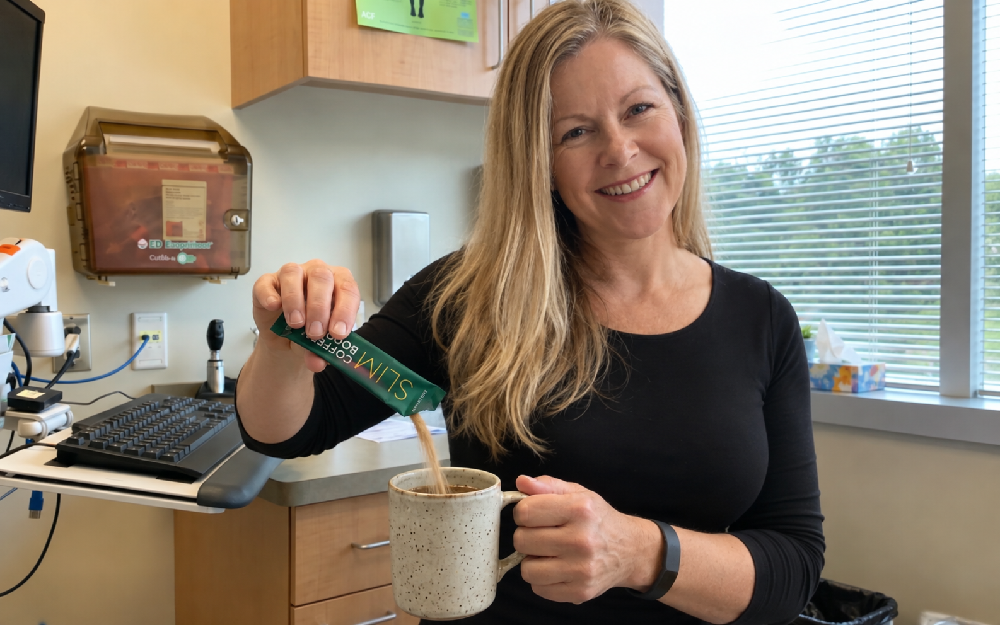
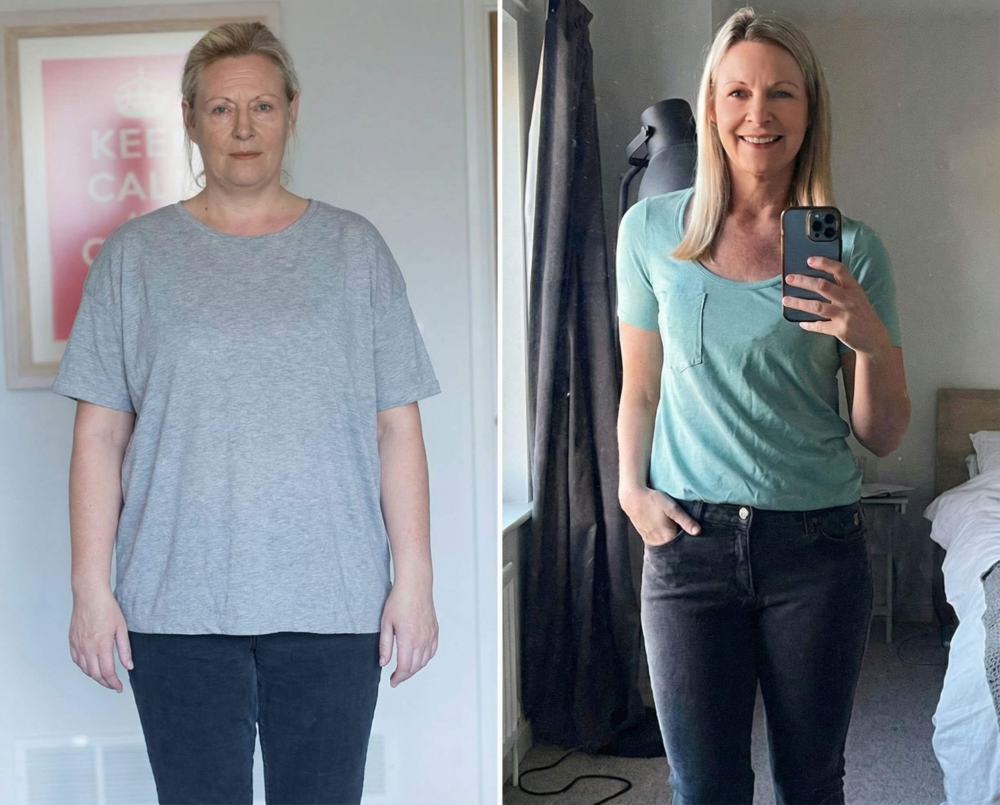
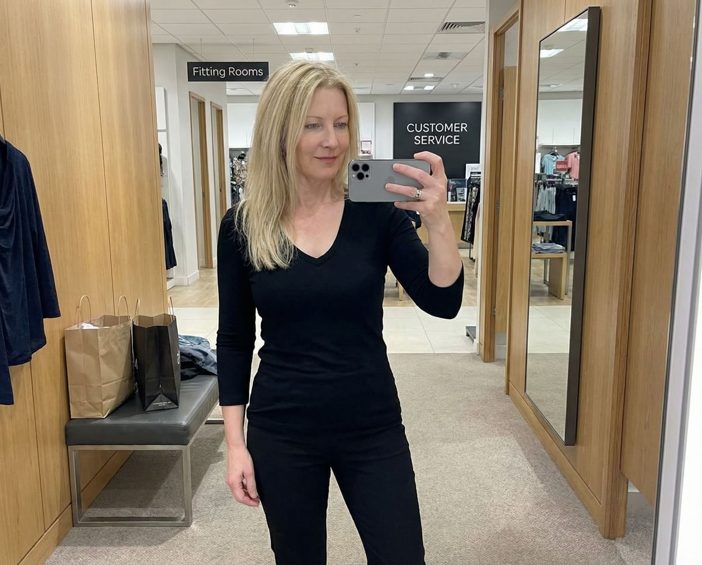
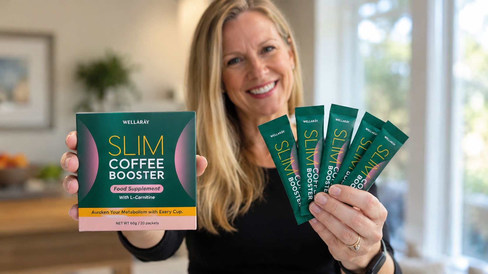

Irgendwann hatte ich genug davon, jeden Montag wieder mit einem neuen Plan anzufangen. Weniger Kohlenhydrate. Keine Snacks. Kalorien zählen. Mahlzeiten vorbereiten. Ich kannte die Regeln längst – mein Problem war, dass ich keine davon dauerhaft durchhielt.
Ich war nie der Typ Mensch, der morgens begeistert Lebensmittel abwiegt oder am Sonntag fünf verschiedene Mahlzeiten für die Woche vorbereitet.
Trotzdem habe ich es immer wieder versucht. Apps, Ernährungspläne, Pulver, spezielle Frühstücke und gefühlt hundert kleine Regeln, an die ich mich erinnern sollte.
Die ersten Tage liefen meistens gut. Dann kam ein stressiger Arbeitstag, ein Wochenende außer Haus oder einfach ein Morgen, an dem ich keine Lust hatte, schon vor dem ersten Kaffee über Ernährung nachzudenken.
Irgendwann wurde mir klar: Ich brauchte nicht noch mehr Disziplin. Ich brauchte eine Routine, die weniger Disziplin verlangt.
Der Gedanke, der meine Sicht verändert hat.
Der Auslöser war überraschend unspektakulär.
Ich sprach mit einer Freundin darüber, wie oft ich schon versucht hatte, meine Ernährung komplett umzustellen. Sie hörte sich meine Liste an und fragte irgendwann:
„Warum versuchst du eigentlich jedes Mal, deinen ganzen Tag auf einmal zu verändern?“
„Vielleicht brauchst du keine kompliziertere Routine. Vielleicht brauchst du eine einfachere.“
Dieser Satz blieb hängen.
Denn egal, welchen Plan ich ausprobiert hatte – eine Sache war jeden Morgen gleich: Ich trank Kaffee.
Zuhause, im Büro oder unterwegs. Der Kaffee war ohnehin da.
Also begann ich nach etwas zu suchen, das nicht noch eine zusätzliche Aufgabe in meinem Alltag war, sondern sich in eine Gewohnheit integrieren ließ, die ich bereits hatte.
So bin ich auf WellaRay Slim Coffee gestoßen.
Bei meiner Suche stieß ich auf WellaRay Slim Coffee.
Was mich zuerst angesprochen hat, war nicht irgendein dramatisches Vorher-Nachher-Versprechen. Es war schlicht die Idee dahinter:
Statt morgens noch eine zusätzliche Routine aufzubauen, konnte ich etwas ausprobieren, das zu einer Gewohnheit passte, die ich sowieso jeden Tag hatte.
Genau das war der Punkt, an dem ich bei meinen früheren Versuchen immer gescheitert war.
Ich brauchte etwas, das sich normal anfühlt.
Also bestellte ich WellaRay über die Angebotsseite.
Warum mir dieser Ansatz sofort sinnvoller vorkam.
Rückblickend waren viele meiner früheren Versuche erstaunlich kompliziert.
Morgens etwas vorbereiten. Mittags bestimmte Lebensmittel vermeiden. Abends noch etwas anderes einnehmen.
Und wenn ich einen Tag vergaß, hatte ich sofort das Gefühl, wieder „raus“ zu sein.
Beim Kaffee war das anders.
Ich musste mir keine neue Uhrzeit merken und keine zusätzliche Gewohnheit aufbauen. Meine morgendliche Tasse gab es ohnehin.

Die ersten Wochen.
Als meine Bestellung ankam, nahm ich mir bewusst vor, diesmal nicht wieder alles gleichzeitig verändern zu wollen.
Keine neue Liste mit zehn Regeln. Kein tägliches Wiegen. Kein perfekter Ernährungsplan.
Ich wollte zunächst nur beobachten, ob diese einfache Routine für mich im Alltag funktioniert.

Das Erste, was mir auffiel, war tatsächlich nicht mein Gewicht – sondern wie leicht es war, die Routine beizubehalten.
Genau das hatte mir bei fast allem anderen gefehlt.
Es fühlte sich nicht wie ein weiteres Projekt an. Ich musste morgens nicht darüber nachdenken.
Kaffee machen, trinken, weiter mit dem Tag.
Mit der Zeit begann ich auch generell bewusster darauf zu achten, wie ich meinen Tag starte und welche Gewohnheiten ich wirklich langfristig beibehalten kann.
Was für mich den Unterschied gemacht hat.
Früher dachte ich immer, dass eine gute Routine möglichst „streng“ sein müsse, damit sie funktioniert.
Heute sehe ich das anders.
Eine Routine bringt mir persönlich wenig, wenn ich sie nach zehn Tagen wieder aufgebe.
Viel wichtiger ist für mich geworden, dass etwas in einen normalen Arbeitstag, ein Wochenende und sogar einen stressigen Morgen passt.
Es ging für mich weniger um Perfektion – und mehr um Konstanz.
Als ich später Bewertungen und Erfahrungen anderer Käufer las, fiel mir auf, dass viele genau diesen Punkt erwähnten: die Einfachheit, eine bestehende Kaffeeroutine nicht komplett verändern zu müssen.
Endlich etwas, das in meinen Morgen passt
„Ich habe schon so viele komplizierte Routinen angefangen und wieder aufgegeben. Mir gefällt hier vor allem, dass ich morgens nicht an noch eine zusätzliche Sache denken muss. Kaffee trinke ich sowieso.“
Viel unkomplizierter als meine früheren Versuche
„Ich wollte diesmal bewusst nichts machen, wofür ich jeden Tag Essen vorbereiten oder zehn verschiedene Regeln beachten muss. Eine einfache Morgenroutine funktioniert für mich deutlich besser.“
Ich bleibe endlich dabei
„Mein größtes Problem war nie, etwas Neues anzufangen. Mein Problem war immer, nach zwei Wochen noch weiterzumachen. Deshalb gefällt mir dieser Ansatz so gut.“
Würde ich es weiterempfehlen?
Wenn du nach einem Produkt suchst, das dir über Nacht ein bestimmtes Ergebnis garantiert, dann wäre das nicht der Grund, warum ich WellaRay interessant finde.
Ernährung, Bewegung, Schlaf, Alltag und persönliche Ausgangslage spielen beim Gewichtsmanagement eine große Rolle – und kein einzelnes Produkt ersetzt diese Faktoren.
Wenn du aber genau wie ich immer wieder an komplizierten Plänen scheiterst, kann WellaRay Slim Coffee interessant sein, weil sich das Konzept sehr leicht in eine bereits bestehende Morgenroutine integrieren lässt.

Für mich war die wichtigste Erkenntnis überraschend simpel:
Ich musste meinen Alltag nicht komplett neu erfinden.
Ich musste eine Routine finden, die zu meinem Alltag passt.

Wenn du komplizierte Pläne satt hast und ohnehin jeden Morgen Kaffee trinkst, ist genau dieser einfache Ansatz einen Blick wert.
WellaRay Slim Coffee ansehen?
Prüfe den aktuellen Preis, die Verfügbarkeit und alle Produktinformationen direkt auf der Angebotsseite.
Preis & Verfügbarkeit prüfen →
Kommentare
Meine Schwester hat mir diesen Artikel geschickt, weil sie weiß, dass ich ständig irgendwelche neuen Ernährungspläne anfange. Ich halte sie vielleicht zwei Wochen durch und dann wird mir alles zu kompliziert. Dass hier eher die Routine im Mittelpunkt steht, finde ich ehrlich gesagt viel nachvollziehbarer.
Gefällt mir · Antworten · 👍 51 · vor 2 WochenMeine Frau bestellt regelmäßig irgendwelche Sachen, die sie online entdeckt. Bei diesem Kaffee fand ich zumindest die Idee logisch: Sie trinkt morgens ohnehin Kaffee, also muss sie keine komplett neue Gewohnheit aufbauen. Das scheint für sie besser zu funktionieren als ihre bisherigen Pläne.
Gefällt mir · Antworten · 👍 23 · vor 11 TagenGenau mein Problem. Ich kann gar nicht zählen, wie viele Apps, Wochenpläne und Ernährungsprogramme ich schon ausprobiert habe. Ich bin immer total motiviert und irgendwann einfach genervt. Inzwischen glaube ich auch, dass einfache Gewohnheiten für mich sinnvoller sind als der nächste perfekte Plan.
Gefällt mir · Antworten · 👍 38 · vor 2 WochenBei mir genauso. Ich habe irgendwann aufgehört, jeden Morgen sofort auf die Waage zu steigen. Das hat mich nur verrückt gemacht. Ich versuche gerade eher, Routinen zu finden, die ich auch in drei Monaten noch mache.
Gefällt mir · Antworten · 👍 14 · vor 12 Tagen@Sandra genau das! Wenn man jeden einzelnen Tag bewertet, verliert man total den Blick dafür, ob man eine Gewohnheit überhaupt langfristig durchhält.
Gefällt mir · Antworten · 👍 9 · vor 12 TagenHat jemand hier den Kaffee schon länger verwendet? Mich interessiert weniger ein schneller Effekt, sondern eher, ob man diese Routine nach mehreren Monaten immer noch problemlos beibehält. Genau daran scheitern bei mir normalerweise solche Sachen.
Gefällt mir · Antworten · 👍 5 · vor 9 TagenBei mir sind es jetzt ungefähr zwei Monate. Ich benutze ihn morgens weiter, weil es inzwischen einfach Teil meiner Routine geworden ist. Das ist für mich tatsächlich der größte Unterschied zu den ganzen Programmen, die ich vorher ausprobiert habe.
Gefällt mir · Antworten · 👍 11 · vor 8 TagenIch denke, viele Leute unterschätzen, wie wichtig Bequemlichkeit ist. Wenn eine Routine jeden Tag zwanzig Minuten extra kostet, werde zumindest ich sie irgendwann nicht mehr machen. Kaffee dauert sowieso nur ein paar Minuten.
Gefällt mir · Antworten · 👍 7 · vor 8 TagenIch bin 63 und habe irgendwann beschlossen, dass ich nicht mehr jeden Januar mit einer neuen Diät anfangen möchte. Mir gefällt inzwischen der Gedanke viel besser, kleine Dinge dauerhaft zu verändern statt für drei Wochen alles perfekt zu machen.
Gefällt mir · Antworten · 👍 52 · vor 1 Woche@Nancy exakt. Ich bin 68 und habe genug von diesen extremen Plänen. Wenn etwas nicht in meinen normalen Alltag passt, weiß ich inzwischen schon vorher, dass ich es nicht dauerhaft machen werde.
Gefällt mir · Antworten · 👍 41 · vor 6 TagenIch war anfangs skeptisch, weil „Slim Coffee“ natürlich nach Marketing klingt. Aber die grundsätzliche Idee, bestehende Gewohnheiten zu nutzen, statt ständig neue aufzubauen, finde ich sinnvoll.
Gefällt mir · Antworten · 👍 19 · vor 10 TagenIch habe gerade bestellt. Bin beruflich viel unterwegs und genau deshalb funktionieren komplizierte Ernährungspläne bei mir überhaupt nicht. Kaffee bekomme ich dagegen wirklich überall hin.
Gefällt mir · Antworten · 👍 6 · vor 5 TagenNur als Hinweis: Das hier ist offensichtlich Werbung. Ich würde generell niemandem empfehlen, aufgrund einer einzelnen Geschichte irgendein Produkt zu kaufen. Lest euch die Zutaten und Produktinformationen selbst durch.
Gefällt mir · Antworten · 👍 12 · vor 4 Tagen@Janet klar, steht ja auch oben Advertorial. Ich gehe bei solchen Seiten sowieso davon aus, dass Affiliate-Links enthalten sind. Jeder sollte selbst entscheiden und keine Wunder erwarten.
Gefällt mir · Antworten · 👍 17 · vor 4 TagenIch habe früher versucht, morgens Smoothies mit zig Zutaten zu machen. Hat ungefähr zehn Tage funktioniert. Heute halte ich meine Morgenroutine absichtlich simpel. Ich glaube, Bequemlichkeit wird bei solchen Dingen wirklich unterschätzt.
Gefällt mir · Antworten · 👍 34 · vor 1 WocheIch habe früher immer gedacht, wenn ich nicht sofort etwas merke, funktioniert eine Routine nicht. Inzwischen versuche ich eher, Veränderungen über längere Zeit zu betrachten. Das nimmt auch viel Stress raus.
Gefällt mir · Antworten · 👍 31 · vor 6 TagenMeine Tochter hat mich auf die Idee gebracht, nicht immer wieder meinen kompletten Speiseplan umzubauen. Sie meinte nur: Such dir zuerst eine Sache, die du wirklich jeden Tag machen kannst. Das hat bei mir tatsächlich mehr verändert als diese ganzen komplizierten Listen.
Gefällt mir · Antworten · 👍 44 · vor 5 TagenIch bin 57 und will ehrlich gesagt nicht mehr mein ganzes Leben um Ernährung herum planen. Ich möchte normal leben können und trotzdem bewusste Entscheidungen treffen. Deshalb gefällt mir dieser Routine-Ansatz.
Gefällt mir · Antworten · 👍 29 · vor 4 TagenBei mir war der größte Unterschied tatsächlich, dass ich nicht mehr ständig überlegen muss, wann ich etwas machen soll. Morgens Kaffee ist ohnehin fest eingeplant.
Gefällt mir · Antworten · 👍 16 · vor 3 TagenHabe gerade nachbestellt. Ich nehme mir inzwischen auch etwas mit, wenn ich beruflich unterwegs bin, weil ich meine Morgenroutine dann nicht jedes Mal komplett ändern muss.
Gefällt mir · Antworten · 👍 4 · vor 1 TagHabe meine Bestellung erst seit ein paar Tagen, deshalb kann ich natürlich noch nichts Langfristiges sagen. Aber ich mag schon jetzt, dass es sich nicht nach einer weiteren komplizierten „Challenge“ anfühlt. Einfach morgens machen und fertig.
Gefällt mir · Antworten · 👍 8 · vor 2 Tagen